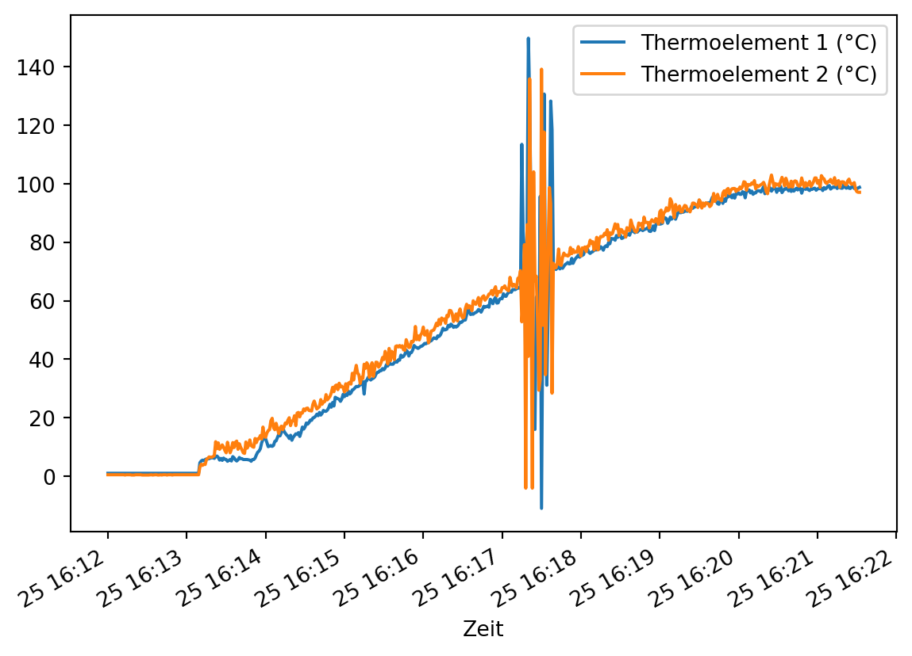
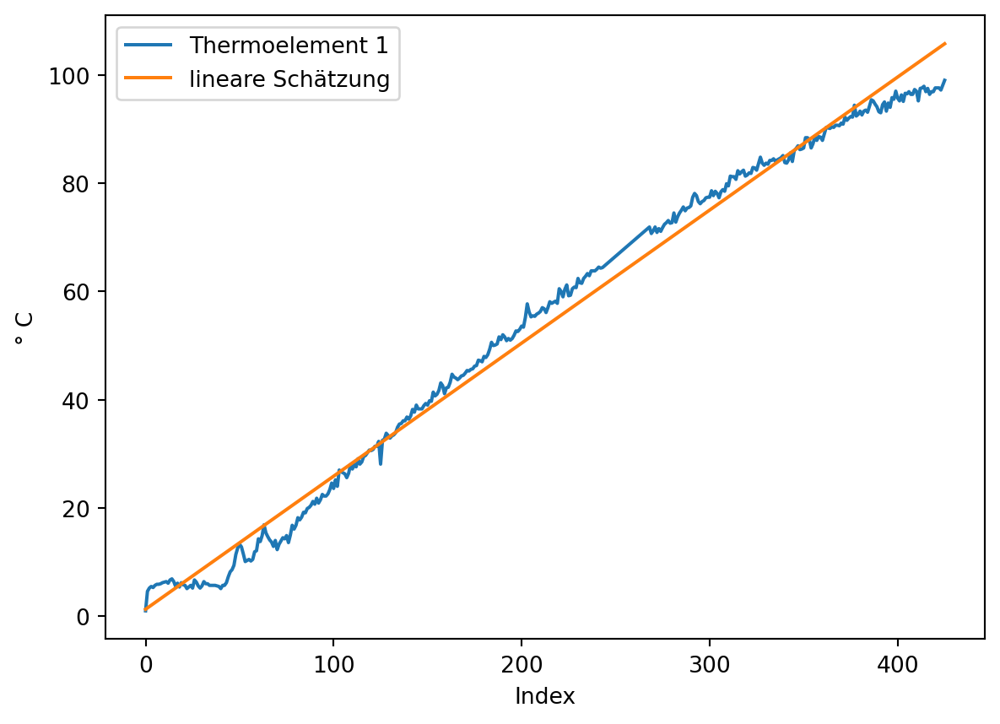
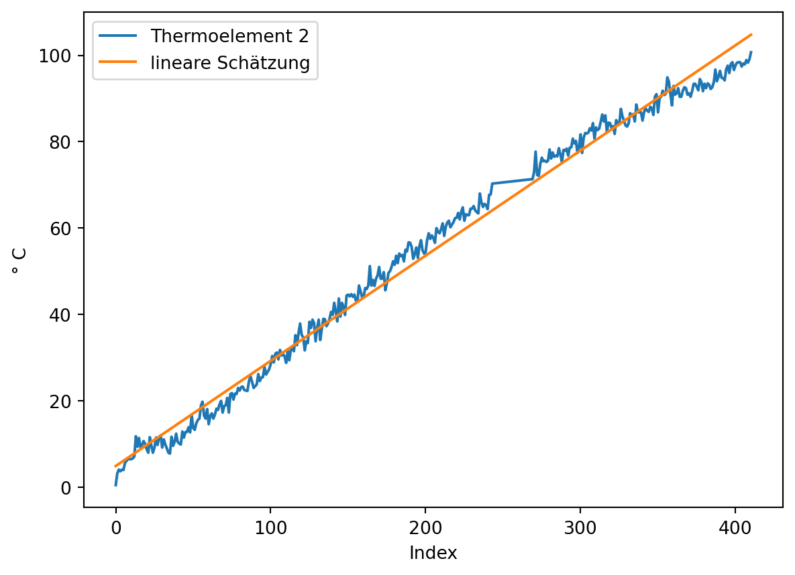
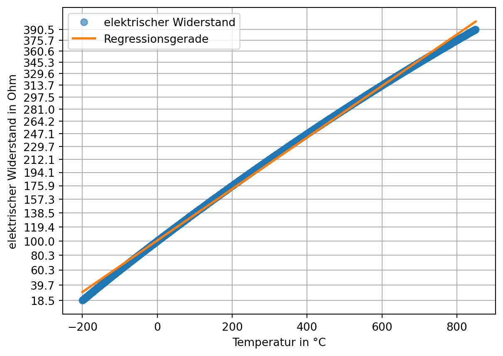

Die Genauigkeit von Messungen wird durch die Korrektion systemtischer Messabweichungen verbessert. In diesem Kapitel werden typische Fehlerarten bei Messungen behandelt:
additive Fehler,
multiplikative Fehler und
Nichtlinearität.
Außerdem werden praktische Methoden der Kalibrierung vorgestellt. In diesem Abschnitt greifen wir die etablierten Begriffe auf, auch wenn die Fehler besser als systematische Messabweichungen bezeichnet werden sollten.
6.1 Kalibrieren und Justieren
Die Korrektion systemtischer Messabweichungen kann auf zwei Arten geschehen: durch Kalibrierung oder Justierung des Messgeräts.
Mit dem Begriff Kalibrierung wird im engeren Sinn die Ermittlung des Zusammenhangs zwischen Messwerten bzw. ihres arithmetischen Mittelwerts und dem vereinbarten richtigen Wert der Messgröße bezeichnet.
Definition 6.1: Kalibrierung nach DIN 1319
“Ermitteln des Zusammenhangs zwischen Meßwert […] oder Erwartungswert […] der Ausgangsgröße […] und dem zugehörigen wahren […] oder richtigen Wert […] der als Eingangsgröße vorliegenden Meßgröße für eine betrachtete Meßeinrichtung […].” (Deutsches Institut für Normung 1995, 22)
Im weiteren Sinn ist mit Kalibrierung auch “die Erstellung einer Korrektionstabelle […], die Ermittlung von Kalibrierfaktoren oder einer (empirischen) Kalibrierfunktion” (Deutsches Institut für Normung 1995, 22) gemeint. Dabei handelt es sich um Methoden, um mit systematischen Messabweichungen behaftete Messwerte zu korrigieren, ohne das Messgerät zu verändern.
Im Unterschied dazu verändert die Justierung das Messgerät dauerhaft.
Definition 6.2: Justierung nach DIN 1319
“Einstellen oder Abgleichen eines Meßgeräts […], um systematische Meßabweichungen […] soweit zu beseitigen, wie es für die vorgesehene Anwendung erforderlich ist.” (Deutsches Institut für Normung 1995, 22)
6.2 Kalibriermethoden nach DIN 1319
In der DIN 1319 werden drei Kalibriermethoden genannt, die hier nur kurz behandelt werden:
Korrektionstabelle,
Ermittlung von Kalibrierfaktoren und
Ermittlung einer (empirischen) Kalibrierfunktion.
Welche Methode verwendet wird, hängt von dem Anwendungsbereich, der Datenverfügbarkeit sowie von der gewünschten Genauigkeit ab.
Methode
Anwendung bei …
Vorteile
Nachteile
Korrektionstabelle
nichtlinear, schwer modellierbar
einfach zu nutzen
viele Daten erforderlich, sonst Interpolation ungenau
Kalibrierfaktoren
lineare Abweichung
leicht umsetzbar
unzureichend bei Nichtlinearität
Kalibrierfunktion
nichtlinear, modellierbar
sehr genau
höherer Aufwand
Korrektionstabelle
Mit der Korrektionstabelle können beliebige Korrektionen dargestellt werden, sofern ausreichend Datenpunkte verfügbar sind. In Kapitel 6.6.1 werden wir ein Beispiel für eine Korrektionstabelle kennenlernen.
Ermittlung von Kalibrierfaktoren
Ein Kalibrierfaktor kann angegeben werden, wenn eine konstante relative Abweichung vorliegt. Ein Beispiel aus der Praxis ist hier auf Seite 1 zu finden.
Der Nullpunktfehler beschreibt die Abweichung der Messgröße von Null, wenn der gesuchte Wert tatsächlich Null ist. Der Nullpunktfehler wird auch als Nullabgleich, Nullpunktverschiebung oder Offsetfehler bezeichnet. Der Nullpunktfehler ist konstant und wirkt additiv auf jeden Messwert. (ics Schneider Messtechnik)
Hier sind die Berechnungen noch nicht korrekt. Mit einfachen Werten scheint es zufällig zu passen, mit verschobenen Werten nicht mehr. Das korrekte Vorgehen steht beim Test mit Kelvin.
Der Nullpunktfehler kann leicht bestimmt werden, wenn Messwerte für den Nullpunkt vorliegen und der wahre Wert bekannt ist. (Wenn außerdem bekannt ist, dass keine weiteren systematischen Messabweichungen vorliegen, kann der Nullpunktfehler über einen beliebigen wahren Referenzwert bestimmt werden.) Für die zur grafischen Darstellung angelegten Daten ist dies der Fall.
Wenn keine Daten für den Nullpunkt vorliegen, kann der Nullpunktfehler mit linearer Regression aus mindestens zwei bekannten Referenzpunkten geschätzt werden. Dazu wird eine ideale Kennlinie geschätzt und ihr Schnittpunkt mit der y-Achse bestimmt. Ebenso wird für die Messwerte eine lineare Funktion geschätzt. Aus der Differenz der y-Achsen-Schnittpunkte kann der Nullpunktfehler geschätzt werden.
# bekannte Referenzpunkte x1 =4x2 =8y1 = messgröße[x1]y2 = messgröße[x2]# ideale Kennlinie schätzen# print(lineares_modell) gibt intercept + slope zurücklm_kennlinie = poly.polyfit(x = [x1, x2], y = [y1, y2], deg =1)print("Der erste Wert ist der Schnittpunkt der idealen Kennlinie mit der y-Achse:", lm_kennlinie.round(2), sep ="\n")# lineare Funktion der Messwerte schätzen## man benötigt mindestens 2 Punkte lm_messwerte = poly.polyfit(x = [x1, x2], y = [messwerte[x1], messwerte[x2]], deg =1)print("Die aus 2 Messwerten geschätzte lineare Funktion:", lm_messwerte.round(2), sep ="\n")## die Schätzung über alle Messwerte ist zuverlässigerlm_messwerte2 = poly.polyfit(x = np.arange(messwerte.size), y = messwerte, deg =1)print("Die aus allen Messwerten geschätzte lineare Funktion:", lm_messwerte2.round(2), sep ="\n")print("\nDie Differenz zwischen dem geschätzten Nullpunkt der Messwerte und dem\ngeschätzten Nullpunkt der idealen Kennlinie ist der Nullpunktfehler:", (lm_messwerte[0] - lm_kennlinie[0]).round(2), sep ="\n")
Der erste Wert ist der Schnittpunkt der idealen Kennlinie mit der y-Achse:
[-0. 1.]
Die aus 2 Messwerten geschätzte lineare Funktion:
[4. 1.]
Die aus allen Messwerten geschätzte lineare Funktion:
[4. 1.]
Die Differenz zwischen dem geschätzten Nullpunkt der Messwerte und dem
geschätzten Nullpunkt der idealen Kennlinie ist der Nullpunktfehler:
4.0
Grafisch wird das Vorgehen deutlich.
# lineare Funktionen berechnengeschätzte_ideale_kennlinie = poly.polyval(x = np.arange(messwerte.size), c = lm_kennlinie)lineare_funktion_messwerte = poly.polyval(x = np.arange(messwerte.size), c = lm_messwerte)# plotten## Punkteplt.plot([x1, x2], [y1, y2], marker ='o', linestyle ='none', color ='C0', label ='bekannte Referenzwerte')plt.plot([x1, x2], [messwerte[x1], messwerte[x2]], marker ='^', linestyle ='none', color ='C1', label ='Messwerte an Referenzpunkten')## Linienplt.plot(np.arange(messwerte.size), geschätzte_ideale_kennlinie, marker ='none', linestyle ='dashed', color ='C0', label ='ideale Kennlinie')plt.plot(np.arange(messwerte.size), lineare_funktion_messwerte , marker ='none', linestyle ='dashed', color ='C1', label ='lineare Funktion Messwerte')plt.plot([0, 0], [messgröße[0], messwerte[0]], linestyle ='dashed', label ='Nullpunktfehler', color ='red')plt.plot([4, 4], [messgröße[4], messwerte[4]], linestyle ='dashed', color ='red')plt.plot([8, 8], [messgröße[8], messwerte[8]], linestyle ='dashed', color ='red')plt.legend()plt.show()
to do: gibt es weitere Methoden?
Nullpunktfehler korrigieren
Der Nullpunktfehler wird durch Subtraktion von den Messwerten korrigiert. Das Vorgehen zur Ermittlung des Nullpunktfehlers wird zur Illustration im folgenden Beispiel mit anderen Werten wiederholt.
# Daten erzeugenmessgröße = np.arange(0, 11) +5messwerte = messgröße +2.5# bekannte Referenzpunkte x1 =2x2 =5y1 = messgröße[x1]y2 = messgröße[x2]# ideale Kennlinie schätzenlm_kennlinie = poly.polyfit(x = [x1, x2], y = [y1, y2], deg =1)# lineare Funktion der Messwerte schätzen## die Schätzung über alle Messwerte ist zuverlässigerlm_messwerte = poly.polyfit(x = np.arange(messwerte.size), y = messwerte, deg =1)# Nullpunktfehler bestimmennullpunktfehler = lm_messwerte[0] - lm_kennlinie[0]print(f"Der Nullpunktfehler beträgt: {nullpunktfehler.round(2)}")# Nullpunktfehler korrigierenkorrigierte_messwerte = messwerte - nullpunktfehler
Der Nullpunktfehler beträgt: 2.5
Übung Nullpunktfehler
Daten von Andres Fahrradsensor misst immer 3 Grad zu viel, weil das Display Abwärme macht (Offset-Fehler). Hier sind die Werte mit Display aus die bekannten Referenzwerte.
6.4 Multiplikative Fehler: Der Spannfehler
Spannfehler scheint eine absolut ungebräuchliche Bezeichnung zu sein
Als Spannfehler wird ein über den Wertebereich (die Spanne) der gesuchten Größe zu- oder abnehmender Fehler bezeichnet. Die relative Messabweichung \(\delta\) ist dabei konstant, die absolute Messabweichung \(\Delta\) abhängig vom Messwert. (ics Schneider Messtechnik)
Der Spannfehler kann geschätzt werden, wenn Referenzwerte bekannt sind. Mit den vollständigen Beispieldaten geht es leicht (in dem Beispiel wird eine Warnung wegen Division durch 0 unterdrückt):
Der Anstieg der Messwerte: 0.67
Der Anstieg der idealen Kennlinie: 1.0
Spannfehler beträgt: -33.33 %
Grafisch wird das Vorgehen deutlich.
# Punkte und Linienplt.plot([0, 10], [messgröße[0], messgröße[-1]], marker ='none', linestyle ='dashed', color ='C0', label ='ideale Kennlinie')plt.plot([x1, x2], [y1, y2], marker ='o', linestyle ='none', color ='C0', label ='bekannte Referenzwerte')plt.plot(messwerte, marker ='^', color ='C1', label ='gemessene Werte')# füllenplt.fill_between(x = np.arange(messwerte.size), y1 = messgröße, y2 = messwerte, alpha =0.2, label ='Spannfehler')plt.legend()plt.show()
Spannfehler korrigieren
Der Spannfehler wird durch die Division der Messwerte durch 1 + Spannfehler korrigiert. Das Vorgehen zur Ermittlung des Spannfehlers wird zur Illustration im folgenden Beispiel mit anderen Werten wiederholt.
Absolute und multiplikative Abweichungen können gemeinsam auftreten. In diesem Beispiel wird die absolute Messabweichung über den dargestellten Wertebereich kleiner, da der Nullpunktfehler mit positivem Vorzeichen und der Spannfehler mit negativen Vorzeichen auftreten.
Aus mindestens zwei bekannten Referenzpunkten können mit linearer Regression der Nullpunkt- und der Spannfehler geschätzt werden. In der linearen Regression wird ein bei 0 beginnender Index für die x-Werte verwendet. Um den Nullpunktfehler korrekt ermitteln zu können, wird dieser Index um den geschätzten wahren Nullpunkt verschoben.
Das liegt daran, dass wenn die Messgröße keinen Wert für 0 enthält, auch der Spannfehler auf den Wert mit dem Index 0 angewendet wird. Deshalb muss erst der Spannfehler korrigiert werden. (Wenn die Werte 0 beinhalten, dann merkt man nicht, dass dieser Schritt nötig ist.)
Wahre Werte:
[ 7 8 9 10 11 12 13 14 15 16 17]
Messwerte:
[ 8.66666667 9.33333333 10. 10.66666667 11.33333333 12.
12.66666667 13.33333333 14. 14.66666667 15.33333333]
erst Nullpunktfehler, dann Spannfehler korrigiert:
[-23. -22. -21. -20. -19. -18. -17. -16. -15. -14. -13.]
erst Spannfehler, dann Nullpunktfehler korrigiert:
[-23. -22. -21. -20. -19. -18. -17. -16. -15. -14. -13.]
Vorgehen Arnold
a = 1.5
b = -6.0
a * messwerte + b
[ 7. 8. 9. 10. 11. 12. 13. 14. 15. 16. 17.]
Simones Vorgehen führt zu korrekt kalibrierten Messwerten. Die Variable a ist der Korrekturfaktor für den Spannfehler. Die Variable b ist die Nullpunktkorrektur, wenn erst der Spannfehler korrigiert wird.
Das hat etwas mit der Konstruktion der Daten bzw. der Korrektur zu tun. b ist die Korrektur des Nullpunktfehlers * Spannfehler. Das heißt aus der Arnoldformel kann der Nullpunktfehler als \(-1 * {b \over a}\) ermittelt werden.
Mein Vorgehen ist flexibler, weil aus beliebigen Punkten, statt Minimum und Maximum geschätzt werden kann. Ein weiteres Problem ist, dass das nicht mit Sensordaten funktioniert, die zufällige Messabweichungen nach oben und nach unten haben. Man kalibriert dann mit dem Maximum aus wahrem Wert + Messabweichung.
Übung Nullpunkt- und Spannfehler
Versuchsaufbau Eis kochen
In einem thermodynamischen Feldlabor wurde ein induktives Heizelement benutzt, um Eiswasser in einem metallischen Flüssigkeitsbehälter mit hoher Wärmeleitfähigkeit zum Kochen zu bringen. Mit einer nichtleitenden Halterung wurden zwei Thermoelemente eines Widerstandsthermometers fixiert. Ein TCTempX16 und eine automatische Protokolleinheit zeichneten die Daten auf.
Als Übung das gekochte Eis verwenden. (man muss den Nullpunkt und 100 Grad als Referenzwerte nehmen). Das Problem ist, dass das Eiskochen auch nichtlinear ist (ab 50 °C). Beachten, man hat keinen Referenzwert für den Nullpunkt (der liegt bei -273 °C), man muss also mit linearer Regression schätzen. Vermutlich muss man dafür nicht in Kelvin umrechnen, wegen der absoluten Verschiebung. –> Dass man nicht verschieben braucht, haben wir ja für die Berechnung ohne Messwerte für den Nullpunkt gezeigt.
Die Nichtlinearität ist kein Fehler des Sensorsystems, sondern ein physikalischer Effekt. Wie gehen wir damit um? –> man könnte sagen, dass der Effekt über den linear geschätzten Spannfehler approximiert wird. Zwischen nichtlinearer Messwertekurve und dem linear geschätzten Spannfehler entsteht dann ein Linearitätsfehler
Das Problem ist, dass die Daten bereinigt werden müssen, ohne sie zu interpolieren oder zu glätten –> mit linearem Trend und sd arbeiten oder auf den Baustein datenfitting und datenoptimierung verweisen.
Datei einlesen und Daten darstellen
Die Messreihe ist in der Datei ‘01-daten/Eis_Messung_1.xlsx’ im Tabellenblatt ‘T15949 MultiChannel - Daten’ gespeichert.
Lesen Sie die Datei ein und bereiten Sie die Daten für die weitere Analyse auf.
Welches Format haben die Daten?
Gibt es fehlende Werte und falls ja, wie sind diese kodiert?
Gibt es fehlerhafte Werte?
to do: Messgenauigkeit aus den Metadaten recherchieren lassen (Als Übungsaufgabe unten)
eis = pd.read_excel(io ='01-daten/Eis_Messung_1.xlsx', sheet_name ='T15949 MultiChannel - Daten')print(eis.head(n =10))
Gerätename: Unnamed: 1 \
0 Gerätebeschreibung: NaN
1 Serien-Nummer: NaN
2 Geräte-ID: NaN
3 NaN NaN
4 NaN NaN
5 Datum Zeit
6 2025-09-25 16:12:00 2025-09-25 16:12:00
7 2025-09-25 16:12:01 2025-09-25 16:12:01
8 2025-09-25 16:12:02 2025-09-25 16:12:02
9 2025-09-25 16:12:03 2025-09-25 16:12:03
TCTempX16 \
0 16-Kanal Thermoelement Temperatur-Datenlogger
1 T15949
2 MultiChannel
3 NaN
4 Kanal 2
5 Thermoelement 1 (°C)
6 1
7 1
8 1
9 1
TCTempX16.1
0 16-Kanal Thermoelement Temperatur-Datenlogger
1 T15949
2 MultiChannel
3 NaN
4 Kanal 4
5 Thermoelement 2 (°C)
6 0.5
7 0.5
8 0.5
9 0.5
Im Kopf des Tabellenblatts stehen Metadaten der Messung. Es gibt vier Spalten mit Daten: Datum und Zeit sowie die Messreihen der beiden Thermoelemente.
Die Daten wurden korrekt eingelesen. Mit der Methode pd.describe() wird der Wertebereich der Spalten überprüft, um numerisch kodierte fehlende oder fehlerhafte Werte zu identifizieren.
print(eis.describe())
Datum Zeit \
count 565 565
mean 2025-09-25 16:16:47.024778752 2025-09-25 16:16:47.024778752
min 2025-09-25 16:12:00 2025-09-25 16:12:00
25% 2025-09-25 16:14:25 2025-09-25 16:14:25
50% 2025-09-25 16:16:47 2025-09-25 16:16:47
75% 2025-09-25 16:19:09 2025-09-25 16:19:09
max 2025-09-25 16:21:32 2025-09-25 16:21:32
std NaN NaN
Thermoelement 1 (°C) Thermoelement 2 (°C)
count 565.000000 565.000000
mean 53.581239 55.451858
min -11.000000 -4.100000
25% 14.900000 20.300000
50% 56.200000 58.300000
75% 90.300000 91.200000
max 149.800000 139.200000
std 36.886184 36.542679
Die Spalten Datum und Zeit enthalten die selben Informationen, eine der beiden Spalten kann deshalb entfernt werden. Die Temperaturmessungen sollten näher betrachtet werden. Eishaltiges Wasser, das zum Kochen gebracht wird, sollte sich in einem Temperaturbereich von 0 bis 100 °C bewegen.
eis.drop(labels ='Datum', axis =1, inplace =True)
Wir stellen den Datensatz grafisch dar.
eis.plot(x ='Zeit', y = ['Thermoelement 1 (°C)', 'Thermoelement 2 (°C)'])

Etwa in der Mitte des Datensatzes verzeichnen beide Sensoren extreme Fehlwerte. Diese sollen entfernt werden.
In einem bestimmten Abschnitt scheinen keine gültigen Werte vorzuliegen und diese sollen als ungültig markiert werden. Dazu betrachten wir zunächst die typische Veränderung der Messwerte, also die Differenz jedes Werts zu seinem Vorgänger mit der Methode pd.Series.diff(). Ebenfalls wird die Veränderung in studentisierten z-Werten ausgedrückt.
Die z-Werte werden mit der scipy-Funktion scipy.stats.zscore(a, ddof = 1, nan_policy = 'omit')) ermittelt. a steht für array-artige Daten, ddof = 1 spezifiziert die Stichprobenstandardabweichung und das Argument nan_policy = 'omit' wird verwendet, um mit dem Wert np.nan an der ersten Stelle arbeiten zu können, der aus der Berechnung der Veränderung entsteht, da für den ersten Wert einer Reihe kein gültiger Wert berechnet werden kann.
Hinweis 6.1: np.diff() und pd.diff()
NumPy und Pandas verfügen über eine Funktion diff. Diese verhalten sich standardmäßig unterschiedlich. Um die Länge einer Datenreihe mit np.diff() zu erhalten, können die Parameter prepend oder append verwendet werden, um der Datenreihe vor Ausführung der Operation einen Wert voranzustellen oder einen Wert anzuhängen. So bleiben die Länge der Datenreihe und die Indexpositionen der Werte erhalten.
Die Position der ungültigen Werte kann sowohl über eine sinnvolle Schwelle der (absoluten) Temperaturveränderung oder der absoluten z-Werte bestimmt werden. In diesem Fall verwenden wir die absolute Temperaturveränderung und wählen den Schwellwert 10. Es wird die Position des ersten und des letzten Werts, der oberhalb dieses Schwellwerts liegt, bestimmt.
# absolute Änderung bestimmendiff_thermoelement_1 = eis['Thermoelement 1 (°C)'].diff().abs()diff_thermoelement_2 = eis['Thermoelement 2 (°C)'].diff().abs()# Schwellwert festlegen und prüfenschwellwert =10bool_series_thermoelement_1 = diff_thermoelement_1 > schwellwertbool_series_thermoelement_2 = diff_thermoelement_2 > schwellwert# ersten und letzten Wert größer Schwellwert finden## Thermoelement 1### Wo steht nicht False?### np.nonzero() gibt ein Tupel zurück### Dieses enthält für jede Dimension ein array der Indexwertepositionen_thermoelement_1 = np.nonzero(bool_series_thermoelement_1)## Thermoelement 2### Wo steht nicht False?### np.nonzero() gibt ein Tupel zurück### Dieses enthält für jede Dimension ein array der Indexwertepositionen_thermoelement_2 = np.nonzero(bool_series_thermoelement_2)# Ausgabe## Thermoelement 1print("Thermoelement 1")print(51*"=")print("Anzahl der Temperaturänderungen mit Betrag > 10:", bool_series_thermoelement_1.sum())print(f"Die Position des ersten Werts: {positionen_thermoelement_1[0][0]}")print(f"Die Position des letzten Werts: {positionen_thermoelement_1[0][-1]}")## Thermoelement 2print("\nThermoelement 2")print(51*"=")print("Anzahl der Temperaturänderungen mit Betrag > 10:", bool_series_thermoelement_2.sum())print(f"Die Position des ersten Werts: {positionen_thermoelement_2[0][0]}")print(f"Die Position des letzten Werts: {positionen_thermoelement_2[0][-1]}")
Thermoelement 1
===================================================
Anzahl der Temperaturänderungen mit Betrag > 10: 20
Die Position des ersten Werts: 310
Die Position des letzten Werts: 333
Thermoelement 2
===================================================
Anzahl der Temperaturänderungen mit Betrag > 10: 20
Die Position des ersten Werts: 310
Die Position des letzten Werts: 333
Für beide Thermoelemente kann der gleiche Bereich als ungültig markiert werden. Vor der weiteren Bearbeitung wird eine Kopie des aufgeräumten Datensatzes erstellt.
von = positionen_thermoelement_1[0][0]bis = positionen_thermoelement_1[0][-1]eis.loc[von : bis, ['Thermoelement 1 (°C)', 'Thermoelement 2 (°C)']] = np.nan# Kopie von eis anlegeneis_backup = eis.copy()
Der Datensatz wird dargestellt. (In der Darstellung mit pd.plot() ist die automatisch gewählte x-Achsenbeschriftung unansehnlich. Deshalb wird ein Datenobjekt für die Darstellung angelegt und die Spalte ‘Zeit’ auf die Uhrzeit reduziert.)
Aus diesen Daten können der Nullpunkt- und der Spannfehler quantifiziert werden. Als Referenzpunkte sind die Temperaturen 0 und 100 Grad Celsius bekannt: Solange ohne Energiezufuhr Eis im Wasser schwimmt, hat es 0 °C, und bei 100 °C erreicht das Wasser seinen Siedepunkt.
Für die wahre Temperatur 0 °C sind viele Messpunkte verfügbar. Schauen wir uns die ersten 100 Messwerte an:
eis.loc[0 : 100, ['Thermoelement 1 (°C)', 'Thermoelement 2 (°C)']].plot(xlabel ='Index', ylabel ='gemessene Temperatur in °C')
Der Zeitpunkt, ab dem die Wärmezufuhr beginnt, kann z. B. mit der Methode pd.diff() ermittelt werden:
Da das Thermoelement 1 leichte Messabweichungen aufweist, wird ein Schwellwert etwas größer als 0 gewählt. Damit wird die Position des ersten Werts bestimmt, der oberhalb des Schwellwerts liegt.
# absolute Änderung bestimmendiff_thermoelement_1 = eis.loc[0 : 100, 'Thermoelement 1 (°C)'].diff().abs()diff_thermoelement_2 = eis.loc[0 : 100, 'Thermoelement 2 (°C)'].diff().abs()# Schwellwert festlegen und prüfenschwellwert =0.2bool_series_thermoelement_1 = diff_thermoelement_1 > schwellwertbool_series_thermoelement_2 = diff_thermoelement_2 > schwellwert# ersten Wert größer Schwellwert finden## Thermoelement 1### Wo steht nicht False?### np.nonzero() gibt ein Tupel zurück### Dieses enthält für jede Dimension ein array der Indexwertepositionen_thermoelement_1 = np.nonzero(bool_series_thermoelement_1)## Thermoelement 2### Wo steht nicht False?### np.nonzero() gibt ein Tupel zurück### Dieses enthält für jede Dimension ein array der Indexwertepositionen_thermoelement_2 = np.nonzero(bool_series_thermoelement_2)# Ausgabe## Thermoelement 1print("Thermoelement 1")print(f"Die Position des ersten Werts: {positionen_thermoelement_1[0][0]}")## Thermoelement 2print("\nThermoelement 2")print(f"Die Position des ersten Werts: {positionen_thermoelement_2[0][0]}")
Thermoelement 1
Die Position des ersten Werts: 67
Thermoelement 2
Die Position des ersten Werts: 67
Die Wärmezufuhr beginnt also bei dem Wert an Indexposition 67. Der Nullpunkt der Messreihe liegt somit an der Indexposition 67 - 1.
start_wärmezufuhr =67start = start_wärmezufuhr -1
Somit kann der Nullpunktfehler nun für beide Thermoelemente aus der Differenz zwischen dem Mittelwert der gemessenen Werte bis exklusiv Indexposition 67 und dem wahren Wert 0 direkt berechnet werden. Diese Position haben wir in der Variable start gespeichert, die für beide Thermoelemente gilt.
Der Punkt, an dem das Wasser siedet, ist nicht so einfach zu bestimmen. Starke Messabweichungen erzeugen ein verrauschtes Bild. Um die grafische Analyse zu erleichtern wurden für beide Messreihen der gleitende Durchschnitt sowie der Mittelwert der geglätten Messreihen eingezeichnet. Die Techniken dafür werden im Methodenbaustein Datenfitting und Datenoptimierung vermittelt.
max des mittelwerts –> Wenn ich max nehme, ist man im Bereich der nach oben verzerrten Messwerte
Maximum der gemittelten, geglätteten Messreihen: 99.13
An Indexposition: 535
Zu bedenken ist:
MF: Die Temperatur, bei der Wasser beim Luftdruck in Deutschland kocht, ist tatsächlich eher 99,4°C. Dieser Rechner und 1007 hPa: 99.8
Wasser kocht nicht sprunghaft als ganzes. Erst siedet es und dabei kocht das Wasser unten im Topf früher als oben, erkennbar an den Luftbläschen. Die Messung kann durch die Luftbläschen verfälscht werden (aber so stark? Die Messung ist im Allgemeinen extrem ungenau). Der Temperaturverlauf bis zum Erreichen der Siedetemperatur muss aber linear sein (siehe Grafik von Marc).
Behelfsweise bestimmen wir den Referenzpunkt für 100 °C, indem die Werte zwischen dem Indexwert 500 und bis zu den letzten 10 Werten des Datensatzes werden gemittelt. Anschließend wird der Index bestimmt, an dem die Messwerte diesen Wert erstmalig erreichen. (Hinweis: Die Daten wurden bereits um ermittelten Nullpunktfehler korrigiert.)
thermoelement_1_max = eis['Thermoelement 1 (°C)'].iloc[500 : -10].mean()thermoelement_2_max = eis['Thermoelement 2 (°C)'].iloc[500 : -10].mean()# ge = greater or equal, idxmax = find first occurrence of maximum value (0 and 1)ende_thermoelement_1 = eis['Thermoelement 1 (°C)'].ge(thermoelement_1_max).idxmax()ende_thermoelement_2 = eis['Thermoelement 2 (°C)'].ge(thermoelement_2_max).idxmax()print(f"Gemitteltes Maximum Thermoelement 1: {thermoelement_1_max:.2f} °C",f"Erstmalig erreicht an Position: {ende_thermoelement_1 }", sep ="\n")print(f"Gemitteltes Maximum Thermoelement 2: {thermoelement_2_max:.2f} °C",f"Erstmalig erreicht an Position: {ende_thermoelement_2 }", sep ="\n")
Gemitteltes Maximum Thermoelement 1: 97.32 °C
Erstmalig erreicht an Position: 491
Gemitteltes Maximum Thermoelement 2: 99.93 °C
Erstmalig erreicht an Position: 476
Spannfehler ermitteln
Mit den bekannten Start- und Endwerten kann der Spannfehler geschätzt werden. Da die Funktion numpy.polynomial.polynomial.polyfit() nicht mit fehlenden Werten wie np.nan umgehen kann, müssen diese herausgefiltert werden. Dies geht zum Beispiel so:
hier sieht man leider das Problem der linearen Regression: Es wird ein Offset-Fehler erzeugt
Das Vorgehen sollte besser werden, wenn die Festpunktmethode verwendet wird. (Dafür wird der Linearitätsfehler größer) Da die lineare Schätzung der Messwerte bei 0 beginnt, ist die Addition des y-Achsenabschnitts der idealen Kennlinie unnötig (erfolgt hier aber trotzdem).
Thermoelement 1:
# Thermoelement 1## bekannte Referenzwerteende = ende_thermoelement_1x1 = startx2 = endey1 =0y2 =100## ideale Kennlinie schätzen## Index muss bei 0 beginnenlm_kennlinie = poly.polyfit(x = [x1 - start, x2 - start], y = [y1, y2], deg =1)## lineare Regression der Messwerte plus y-Achsenschnittpunkt der idealen Kennlinie### gültige Werte bestimmengültige_werte = np.isfinite(eis.loc[start:ende, 'Thermoelement 1 (°C)'])### Regressionlm_messwerte_thermoelement_1_plus_intercept_kennlinie = poly.polyfit( x = np.arange(eis.loc[start:ende, :].shape[0])[gültige_werte] + lm_kennlinie[0], y = eis.loc[start:ende, 'Thermoelement 1 (°C)'][gültige_werte], deg =1)## Spannfehler bestimmenspannfehler_thermoelement_1 = lm_messwerte_thermoelement_1_plus_intercept_kennlinie[1] - lm_kennlinie[1]## Ausgabeprint("\nThermoelement 1")print(51*"=")print(f"lineare Schätzung der idealen Kennlinie:\n{lm_kennlinie}")print(f"lineare Schätzung für Thermoelement 1 plus y-Achsenschnittpunkt der idealen Kennlinie:\n{lm_messwerte_thermoelement_1_plus_intercept_kennlinie}")print(f"Anzahl gültiger Werte: {len(np.arange(eis.loc[start:ende, :].shape[0])[gültige_werte])}")print(f"Der Anstieg der Messwerte: {round(lm_messwerte_thermoelement_1_plus_intercept_kennlinie[1], 2)}")print(f"Der Anstieg der idealen Kennlinie: {round(lm_kennlinie[1], 2)}")print(f"Der Spannfehler beträgt: {(spannfehler_thermoelement_1 *100).round(2)} %")
Thermoelement 1
===================================================
lineare Schätzung der idealen Kennlinie:
[-8.93311885e-15 2.35294118e-01]
lineare Schätzung für Thermoelement 1 plus y-Achsenschnittpunkt der idealen Kennlinie:
[0.28764301 0.24579133]
Anzahl gültiger Werte: 402
Der Anstieg der Messwerte: 0.25
Der Anstieg der idealen Kennlinie: 0.24
Der Spannfehler beträgt: 1.05 %
Thermoelement 2:
# Thermoelement 2## bekannte Referenzwerteende = ende_thermoelement_2x1 = startx2 = endey1 =0y2 =100## ideale Kennlinie schätzen## Index muss bei 0 beginnenlm_kennlinie = poly.polyfit(x = [x1 - start, x2 - start], y = [y1, y2], deg =1)## lineare Regression der Messwerte plus y-Achsenschnittpunkt der idealen Kennlinie### gültige Werte bestimmengültige_werte = np.isfinite(eis.loc[start:ende, 'Thermoelement 2 (°C)'])### Regressionlm_messwerte_thermoelement_2_plus_intercept_kennlinie = poly.polyfit( x = np.arange(eis.loc[start:ende, :].shape[0])[gültige_werte] + lm_kennlinie[0], y = eis.loc[start:ende, 'Thermoelement 2 (°C)'][gültige_werte], deg =1)## Spannfehler bestimmenspannfehler_thermoelement_2 = lm_messwerte_thermoelement_2_plus_intercept_kennlinie[1] - lm_kennlinie[1]## Ausgabeprint("\nThermoelement 2")print(51*"=")print(f"lineare Schätzung der idealen Kennlinie:\n{lm_kennlinie}")print(f"lineare Schätzung für Thermoelement 2 plus y-Achsenschnittpunkt der idealen Kennlinie:\n{lm_messwerte_thermoelement_2_plus_intercept_kennlinie}")print(f"Anzahl gültiger Werte: {len(np.arange(eis.loc[start:ende, :].shape[0])[gültige_werte])}")print(f"Der Anstieg der Messwerte: {round(lm_messwerte_thermoelement_2_plus_intercept_kennlinie[1], 2)}")print(f"Der Anstieg der idealen Kennlinie: {round(lm_kennlinie[1], 2)}")print(f"Der Spannfehler beträgt: {(spannfehler_thermoelement_2 *100).round(2)} %")
Thermoelement 2
===================================================
lineare Schätzung der idealen Kennlinie:
[-8.93311885e-15 2.43902439e-01]
lineare Schätzung für Thermoelement 2 plus y-Achsenschnittpunkt der idealen Kennlinie:
[4.43914138 0.2435162 ]
Anzahl gültiger Werte: 387
Der Anstieg der Messwerte: 0.24
Der Anstieg der idealen Kennlinie: 0.24
Der Spannfehler beträgt: -0.04 %
Somit kann der Spannfehler korrigiert werden nach korrigierte_messwerte = korrigierte_messwerte / (1 + spannfehler).
hier sieht man leider das Problem der linearen Regression: Es wird ein Offset-Fehler erzeugt
Das Vorgehen sollte besser werden, wenn die Festpunktmethode verwendet wird. (Dafür wird der Linearitätsfehler größer)
Was hier passiert:
hier auch den Nullpunktfehler schätzen, dazu Kopie wieder herstellen
x = [x1 - start, x2 - start] muss gesetzt werden, um den Index auf 0 zu setzen
size durch shape[0] ersetzen, das führt bei dfs zu weniger Fehlern
prüfen: plus y-Achsenschnittpunkt der idealen Kennlinie bei der Regression der Messwerte aus dem Abschnitt Nullpunkt- und Spannfehler quantifizieren
poly.polyfit() kann nicht mit nan umgehen :(
die linien erreichen zu hohe Schätzewerte - am Ende muss ja 100 °C stehen, aber es werden 105 °C für den letzten Wert geschätzt (was so wäre, wenn der Zusammenhang linear wäre)
## kann es sein, dass gültige Werte mit Index die falschen Werte filtert?
## für y = eis.loc passt es
## bei x = np.arange(eis.loc[start:ende, :].shape[0]) passt es auch, da nicht mit index abgeglichen wird
## print(gültige_werte[ : 5])
der x-Index ist kürzer für die Messwerte, deshalb ist der Anstieg größer, weil mit weniger x-Werten gerechnet wird. Denn der Anstieg müsste ja kleiner als bei der idealen Kennline und der Spannfehler negativ sein. Die ideale Kennlinie berechnet den Anstieg über 435 x-Werte, das lm der Messreihe wird für nur 411 Werte berechnet - deshalb ist der Anstieg größer. Aber müsste der letzte Wert nicht trotzdem 435 sein?
start: 66 0
ende: 491 100
lm_kennlinie: [-8.93311885e-15 2.35294118e-01]
Anzahl gültiger Werte: 402
So sieht das Ende der Indexreihe aus:
[421 422 423 424 425]
lm_messwerte Thermoelement 1 plus intercept: [1.28764301 0.24579133]

letzter Wert von Thermoelement 1 im Bereich: 99.0
letzter Wert von linie: 105.74895723801886
Der Nullpunktfehler beträgt: 1.29
Der Spannfehler beträgt: 1.05 %
start: 66 0
ende: 476 100
lm_kennlinie: [-8.93311885e-15 2.43902439e-01]
lm_messwerte Thermoelement 2 plus intercept: [4.91675332 0.2435162 ]

letzter Wert von Thermoelement 2 im Bereich: 100.7
letzter Wert von linie: 104.758397270617
Der Nullpunktfehler beträgt: 4.92
Der Spannfehler beträgt: -0.04 %
Arnoldformel
a = (wahres_maximum - wahres_minimum) / (messwerte.max() - messwerte.min()) b = wahres_minimum - a * messwerte.min()
Maximum kalibriertes Thermoelement 1: 100.71428571428572
Maximum kalibriertes Thermoelement 2: 102.29540918163671
6.6 Nichtlinearität: Linearitätsfehler
Beispiel Pt100
Das Pt100 ist ein Platin-Widerstandsthermometer (Pt = Platin) mit einem definierten Widerstandswert von \(100 \Omega\) bei einer Temperatur von 0°C (daher der Name Pt100). Der Widerstand eines Pt100 steigt mit der Temperatur. Bei 100 °C beträgt der Widerstand beispielsweise \(138,51 \Omega\). Der Zusammenhang zwischen der Eingangsgröße, dem elektrischen Widerstand, und der so gemessenen Temperatur ist jedoch nur näherungsweise linear.
Die Eigenschaften eines Pt100 Widerstandes sind in der Norm DIN EN IEC 60751 (Deutsches Institut für Normung 2023) festgelegt. Dort wird der Zusammenhang durch zwei Polynome für den Temperaturbereich von -200 °C bis 0 °C und für den Temperaturbereich von 0 °C bis 850 °C beschrieben.
Für den Temperaturbereich –200 °C bis 0 °C: \[
R_T = R_0 \cdot \left(1 + A \cdot T + B \cdot T^2 + C \cdot (T - 100 ^\circ\text{C}) \cdot T^3\right)
\]
Für den Temperaturbereich von 0 °C bis +850 °C: \[
R_T = R_0 \cdot \left(1 + A \cdot T + B \cdot T^2\right)
\]
Dabei gilt:
\(R_T\) ist der Widerstand bei der Temperatur \(T\),
\(R_0\) ist der Widerstand bei \(0^\circ\text{C}\),
\(A\), \(B\) und \(C\) sind Konstanten, die den spezifischen Charakter des Sensors beschreiben. Dabei sind:
Im Anhang der Norm befinden sich Tabellen, die die Beziehung zwischen Temperatur und gemessenem Widerstand wiedergeben. Das Format der Tabellen erlaubt es, aus einem gemessenen Widerstandswert schnell die gemessene Temperatur zu ermitteln. Dazu sind in der ersten Spalte die Temperaturen in Zehnerschritten, in den folgenden zehn Spalten die Einerstelle eingetragen. Für Temperaturen unter Null ist die Einerstelle jeweils zu subtrahieren (erkennbar am Vorzeichen \(-\)), für Temperaturen über Null dagegen zu addieren (erkennbar am Vorzeichen \(+\)). Eine zusammengefasste Darstellung finden Sie zum Beispiel hier.
Die Notation \(t_{90} / °C\) beruht auf der Internationalen Temperaturskala ITS-90 von 1990, die Temperaturen \(T_{90}\) in Kelvin und \(t_{90}\) in Grad Celsius definiert. Die Notation zeigt also an, dass in der Tabelle Angaben in Grad Celsius stehen. (Deutsches Institut für Normung (2023), S. 10)
Aufgabe Pt100-Tabelle einlesen
Für die Datenanalyse ist das tabellarische Format weniger geeignet. Die hier zusammengefasste Darstellung wurde in zwei CSV-Dateien kopiert. Lesen Sie die Dateien so ein, dass der elektrische Widerstand und die Temperatur jeweils eine aufsteigende Datenreihe bilden (z. B. als Liste, NumPy-Array oder eine Pandas-Datenstruktur). Die Dateipfade lauten:
Es gibt 201 Werte (von -200 bis 0). Die Daten beginnen in der Zeile mit dem Index 1 (wenn die erste Zeile als header eingelesen wird). Diese enthält nur einen Eintrag in der Spalte ‘0’. Die folgenden Zeilen sind von rechts nach links einzulesen. Das Dezimaltrennzeichen ist das ,.
Das Einlesen der Daten von rechts nach links kann auf viele Arten bewerkstelligt werden. Eine einzeilige Lösung beginnt damit, der Methode pd.iloc[::-1] eine negative Schrittweite zu übergeben.
Das führt dazu, dass die Zeilen des DataFrame in umgekehrter Reihenfolge ausgegeben werden. Um die Spalten in umgekehrter Reihenfolge auszugeben, wird der DataFrame mit der Methode pd.T zwei mal transponiert.
print(df.T.iloc[::-1].T)
2 1 0
0 1 2 3
1 4 5 6
Mit der NumPy-Methode np.flatten() kann ein Array in eine eindimensionale Struktur reduziert werden. Dafür wird mit der Methode pd.to_numpy() der DataFrame als NumPy-Array ausgegeben.
Für die Temperaturen oberhalb von 0 Grad kann das Vorgehen vereinfacht werden, da die Datei gleich aufgebaut ist und die Werte aufsteigend sortiert sind.
Es fällt auf, dass die Daten einen Fehlwert enthalten. Die Position des Fehlwerts wird mit zwei Pandas-Methoden bestimmt. pd.diff() gibt die Differenz jedes Werts zu seinem Vorgänger zurück. pd.idxmin() gibt den Zeilenindex (genauer das label) des kleinsten Werts zurück. (Läge der Fehlwert oberhalb der Linie, würde pd.idxmax() verwendet werden.)
# := ist der sog. Walross-Operatorprint(( position_fehlwert := pt100['Ohm'].diff().idxmin() ))print(pt100.iloc[list(range(position_fehlwert -2, position_fehlwert +3))])
Der korrekte Wert kann aus der DIN-Norm (Deutsches Institut für Normung 2023, 26) abgelesen werden (153,96). Man könnte den Wert aber auch interpolieren (siehe Beispiel).
Beispiel 6.2: Interpolation
Die einfachste Form der Interpolation ist die lineare Interpolation.
Zwei Methoden zur Quantifizierung der Nichtliniearität sind die Festpunkt- und die Toleranzbandmethode.
Festpunktmethode
Definition 6.3: Festpunktmethode
Die Endpunkte der realen Kennlinie werden durch eine Gerade verbunden. Der Linearitätsfehler ist das Maximum der Abweichung der Kennlinie zu dieser Geraden. (Grote und Feldhusen 2011, W2–3 (S. 1661-1662))
Dazu bestimmen wir zunächst die Vorhersagewerte einer Geraden durch die Endpunkte.
lm = poly.polyfit( x = [pt100['Temperatur'].iloc[0], pt100['Temperatur'].iloc[-1]], y = [pt100['Ohm'].iloc[0], pt100['Ohm'].iloc[-1]], deg =1)print(lm.round(2)) # intercept + slopevorhersagewerte = poly.polyval(x = pt100['Temperatur'], c = lm)plt.plot(pt100['Temperatur'], pt100['Ohm'], marker ='o', linestyle ='', label ='elektrischer Widerstand', alpha =0.6)plt.plot(pt100['Temperatur'], vorhersagewerte, linewidth =2, label ='Vorhersagewerte endpunktverbindende Gerade')plt.yticks(pt100['Ohm'][::50]);plt.xlabel('Temperatur in °C')plt.ylabel('elektrischer Widerstand in Ohm')plt.grid()plt.legend()plt.show()
[89.37 0.35]
Aus der Differenz des gemessenen elektrischen Widerstands und der linearen Vorhersagewerte kann der maximale Linearitätsfehler bestimmt werden.
linearitätsfehler = (pt100['Ohm'] - vorhersagewerte).abs().max()print(f"Linearitätsfehler nach Festpunktmethode: {linearitätsfehler:.2f} Ohm.")
Linearitätsfehler nach Festpunktmethode: 16.43 Ohm.
Toleranzbandmethode
Definition 6.4: Toleranzbandmethode
Bei der Toleranzbandmethode wird eine Gerade so durch die Messpunkte gelegt, dass die Summe der quadrierten Abweichungen der Messpunkte zu dieser Geraden (Methode der kleinsten Quadrate) oder die größte einzelne Abweichung (Tschebyscheff-Approximation) minimiert wird. Die Größe des Linearitätsfehlers ist die maximale senkrechte Entfernung der Kennlinie zu dieser Ausgleichsgeraden. (Grote und Feldhusen 2011, W3 (S. 1662))
Das Prinzip der Methode der kleinsten Quadrate haben wir bereits kennengelernt.
lm = poly.polyfit( x = pt100['Temperatur'], y = pt100['Ohm'], deg =1)print(lm.round(2)) # intercept + slopevorhersagewerte = poly.polyval(x = pt100['Temperatur'], c = lm)plt.plot(pt100['Temperatur'], pt100['Ohm'], marker ='o', linestyle ='', label ='elektrischer Widerstand', alpha =0.6)plt.plot(pt100['Temperatur'], vorhersagewerte, linewidth =2, label ='Regressionsgerade')plt.yticks(pt100['Ohm'][::50]);plt.xlabel('Temperatur in °C')plt.ylabel('elektrischer Widerstand in Ohm')plt.grid()plt.legend()plt.show()
[100.67 0.35]

Aus der Differenz des gemessenen elektrischen Widerstands und der linearen Vorhersagewerte kann der maximale Linearitätsfehler (= das größte Residuum) bestimmt werden.
linearitätsfehler = (pt100['Ohm'] - vorhersagewerte).abs().max()print(f"Linearitätsfehler nach Toleranzbandmethode: {linearitätsfehler:.2f} Ohm.")
Linearitätsfehler nach Toleranzbandmethode: 11.45 Ohm.
Problem: Die Toleranzbandmethode produziert einen Nullpunktfehler.
6.7 Fehlerarten und praktische Kalibriermethoden
Nichtlinearität
Bei einer idealen Messung hängt der gesuchte Wert linear vom gemessenen Wert ab. Viele analoge Sensoren reagieren aufgrund von Materialeigenschaften oder abhängig von der Temperatur nicht linear auf die gemessene Größe. Das heißt, die Messwerte sind nicht direkt proportional zur Messgröße. Dieser sogenannte Linearitätsfehler muss korrigiert werden, um genau zu messen.
Dafür gibt es zwei Möglichkeiten. Zum einen können nicht lineare Verfahren zur Parameterschätzung verwendet werden, was im Methodenbaustein Datenfitting und Datenoptimierung behandelt wird. Zum anderen kann der Liniearitätsfehler korrigiert werden, um mit den leichter zu handhabenden linearen Verfahren der Parameterschätzung arbeiten zu können. Die Korrektion von Linearitätsfehlern wird in diesem Kapitel behandelt.
6.8 Weitere
Hysterese: Verzögerung zwischen Änderung des Wertes und Änderungsgeschwindigkeit des Messwerts Drift: Rauschen:
6.9 Gemeinsames Auftreten in Verbindung mit Nichtlinearität
6.10 Resterampe
(weitere Fehlerquellen: Hysterese, Drift, Rauschen oder Nullpunktverschiebung)
Methoden zur Korrektur: Wo ist die Variablentransformation, um eine lineare Parameterschätzung durchzuführen?
Erstellung einer Kalibrierkurve/Tabelle: Der Sensor wird bei einer Reihe von bekannten Werten gemessen (Kalibrierpunkte). Diese Punkte werden verwendet, um eine individuelle Kurve oder Tabelle zu erstellen, die das tatsächliche Verhalten des Sensors darstellt.
Anwendung mathematischer Korrekturen:
Nichtlineare Regression: Eine Funktion (z. B. Polynom) wird durch die Kalibrierdaten angepasst. Die Differenz zwischen Messwerten und der Funktion wird minimiert, um die bestmögliche Anpassung zu erzielen. Diese Methode wird im Methodenbaustein Datenfitting und Datenoptimierung gezeigt.
-Spezifische Koeffizienten: Für bestimmte Sensortypen gibt es Standardmodelle, die mit speziellen Koeffizienten verwendet werden.
- ITS-90 und Callendar-van-Dusen-Koeffizienten: Für die Kalibrierung von Platin-Sensoren.
- Steinhart-Hart-Koeffizienten: Eine gängige Methode für Thermistoren zur Berechnung der Temperatur.
Es sollten ausreichend viele Kalibrierpunkte über den gesamten Messbereich erfasst werden, um eine genaue Abbildung der Nichtlinearität zu gewährleisten.
Fehlerkompensation: Durch die Korrektur werden Nullpunkt- und Spannfehler mitberücksichtigt und die Genauigkeit des Sensors über seinen gesamten Messbereich hinweg verbessert
Deutsches Institut für Normung. 1995. „Grundlagen der Meßtechnik - Teil 1: Grundbegriffe“. DIN Media. https://doi.org/10.31030/2713411.
———. 2023. „Industrielle Platin-Widerstandsthermometer und Platin-Temperatursensoren (IEC 60751:2022). Deutsche Fassung EN IEC 60751:2022“. DIN Media. https://doi.org/10.31030/3405985.
Grote, Karl-Heinrich, und Jörg Feldhusen, Hrsg. 2011. Dubbel: Taschenbuch für den Maschinenbau. 23. Aufl. Springer Berlin, Heidelberg. https://doi.org/10.1007/978-3-642-17306-6.